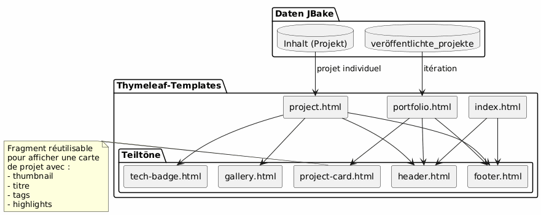
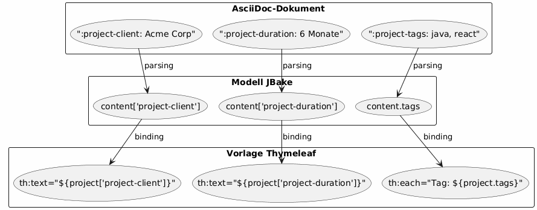
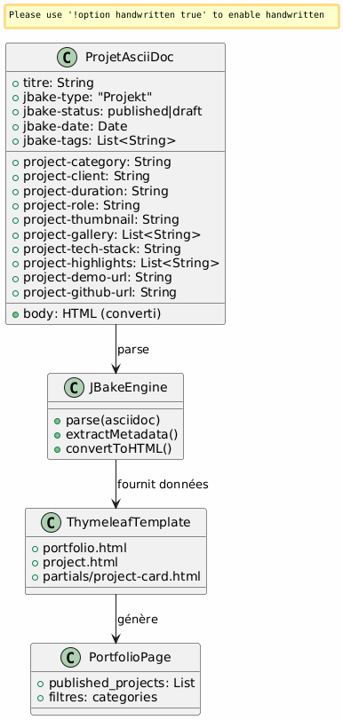
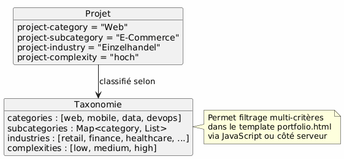

Architecture Portfolio JBake - Vision und Use Cases
Publié le 15 January 2026
Architektonische Vision
Leitprinzip
Die Architektur beruht auf dem Prinzip der Trennung der Anliegen :
-
Inhalt : strukturierte AsciiDoc-Dateien mit reichen Metadaten
-
Präsentation : wiederverwendbare Thymeleaf-Vorlagen
-
Daten : Modell automatisch von JBake aus den AsciiDoc-Attributen extrahiert
-
Stil : Bootstrap 5 für visuelle Konsistenz
Strategische Wahl: AsciiDoc für das Portfolio
| Kriterium | Vorteil |
|---|---|
Kohärenz |
Das gleiche Format wie bei den Blogartikeln |
Metadaten |
Strukturierte und erweiterbare Attribute`project-*`) |
Wartbarkeit |
Einfache Textbearbeitung, Git-versionierbar |
Flexibilität |
Kann reichhaltigen Inhalt (Tabellen, Code, Bilder) enthalten |
Vorlagenbildung |
JBake extrahiert automatisch die Attribute für Thymeleaf |
Datenmodell
Jedes Portfolio-Projekt ist ein AsciiDoc-Dokument mit:
-
Header-Metadaten : strukturierte Informationen (Kunde, Dauer, Technologien usw.)
-
Dokumentenkörper: narrative Beschreibung, Herausforderungen, Lösungen, Ergebnisse
-
Benutzerdefinierte Attribute : präfixiert`project-*`für die automatische Extraktion
Detaillierte Anwendungsfälle
UC1 : Ein Element zum Portfolio hinzufügen
Nominalfluss
Failed to generate image: PlantUML preprocessing failed: [From <input> (line 4) ] @startuml skinparam backgroundColor #FEFEFE actor Développeur as dev participant "Editor ^^^^^ Syntax Error? (Assumed diagram type: sequence) @startuml skinparam backgroundColor #FEFEFE actor Développeur as dev participant "Editor Text" as editor participant "Datei\nAsciiDoc" as file participant "JBake Engine" as jbake participant "Statische Website" as site dev -> editor : Créer nouveau fichier activate editor editor -> file : portfolio/nouveau-projet.adoc activate file dev -> editor : Rédiger en-tête avec métadonnées\n(titre, type=project, status=published,\nattributs project-*) dev -> editor : Rédiger contenu narratif\n(contexte, défis, solutions) dev -> editor : Ajouter images dans assets/img/portfolio/ editor -> file : Sauvegarder deactivate editor dev -> jbake : Lancer build (jbake -b) activate jbake jbake -> file : Lire et parser jbake -> jbake : Extraire métadonnées jbake -> jbake : Convertir AsciiDoc → HTML jbake -> jbake : Appliquer template project.html jbake -> jbake : Ajouter à la liste portfolio.html jbake -> site : Générer pages statiques deactivate jbake dev -> site : Vérifier résultat activate site site --> dev : Afficher projet deactivate site @enduml
Vorlage der zu erstellenden Datei
Der Entwickler erstellt`content/portfolio/nom-projet.adoc`mit einer standardisierten Struktur :
-
Kopfzeile mit allen erforderlichen Attributen
-
Standardisierte Abschnitte (Kontext, Herausforderungen, Lösungen, Ergebnisse)
-
Konsistente Nomenklatur der Bilder
Validierungspunkte
-
Die verpflichtenden Attribute sind vorhanden (
jbake-type,jbake-status,project-thumbnail) -
Die referenzierten Bilder existieren in`assets/img/portfolio/`
-
Der JBake-Build läuft ohne Fehler
-
Das Projekt erscheint auf der Portfolio-Seite
-
Die individuelle Projektseite wird korrekt angezeigt.
UC2 : Lösche ein Element des Portfolios
Nominalfluss
Failed to generate image: PlantUML preprocessing failed: [From <input> (line 4) ] @startuml skinparam backgroundColor #FEFEFE actor Développeur as dev participant "System ^^^^^ Syntax Error? (Assumed diagram type: sequence) @startuml skinparam backgroundColor #FEFEFE actor Développeur as dev participant "System Dateien" as fs participant "JBake Engine" as jbake participant "Statische\nSeite" as site database "Cache JBake" as cache dev -> fs : Supprimer portfolio/projet-ancien.adoc activate fs fs --> dev : Fichier supprimé deactivate fs dev -> fs : (Optionnel) Supprimer images associées\nassets/img/portfolio/projet-ancien-* activate fs fs --> dev : Images supprimées deactivate fs dev -> cache : Nettoyer cache JBake activate cache cache --> dev : Cache vidé deactivate cache dev -> jbake : Rebuild complet (jbake -b) activate jbake jbake -> jbake : Scanner content/portfolio/ jbake -> jbake : Projet absent → non généré jbake -> jbake : Régénérer portfolio.html\n(sans le projet supprimé) jbake -> site : Déployer nouveau build deactivate jbake dev -> site : Vérifier activate site site --> dev : Projet absent de la liste deactivate site @enduml
Alternative Strategie: Archivierung
Anstatt endgültig zu löschen, Möglichkeit, einen Ordner zu erstellen`content/portfolio/archive/`:
-
Die Datei verschieben anstatt sie zu löschen
-
Ermöglicht das einfache Wiederherstellen
-
Behalte den Git-Verlauf übersichtlicher
Bereinigung der Ressourcen
-
Verwaiste Bilder überprüfen in`assets/img/portfolio/`
-
Bilder löschen, die von anderen Projekten nicht referenziert werden
-
Den JBake-Cache bereinigen, um Geisterreferenzen zu vermeiden
UC3 : Als Entwurf setzen
Nominalfluss
Failed to generate image: PlantUML preprocessing failed: [From <input> (line 4) ] @startuml skinparam backgroundColor #FEFEFE actor Développeur as dev participant "Datei ^^^^^ Syntax Error? (Assumed diagram type: sequence) @startuml skinparam backgroundColor #FEFEFE actor Développeur as dev participant "Datei AsciiDoc Translation: Datei\nAsciiDoc" as file participant "JBake\nEngine" as jbake participant "Site\nStatique" as site dev -> file : Ouvrir portfolio/projet.adoc activate file dev -> file : Modifier attribut\n:jbake-status: published\n↓\n:jbake-status: draft file --> dev : Sauvegardé deactivate file dev -> jbake : Rebuild (jbake -b) activate jbake jbake -> file : Parser le fichier jbake -> jbake : Détecter status=draft jbake -> jbake : Exclure de published_projects jbake -> jbake : Ne pas créer page publique note right Le projet existe toujours mais n'est pas publié end note jbake -> site : Générer site (sans ce projet) deactivate jbake dev -> site : Vérifier portfolio activate site site --> dev : Projet absent de la liste publique deactivate site @enduml
Mögliche Zustände

Typische Anwendungsfälle
-
Projekt in Bearbeitung : Entwurf erstellen, veröffentlichen wenn bereit
-
Vorübergehend vertrauliches Projekt : in den Entwurf wechseln, bis die Kundenzustimmung vorliegt
-
Wichtiges Update: in den Entwurf wechseln, bearbeiten, erneut veröffentlichen
-
A/B testing : Entwurf duplizieren, testen, die beste Version veröffentlichen
Templating-Architektur
Strategie wiederverwendbarer Templates

Muster der Datenextraktion
JBake konvertiert AsciiDoc-Attribute automatisch in Eigenschaften, die in Thymeleaf zugänglich sind :

Namenskonventionen
-
Projektattribute : Präfix`project-*` (ex:
project-client,project-tech-stack) -
Dateien : kebab-case (ex:`ecommerce-platform.adoc`)
-
Bilder : Projektname-Präfix (Beispiel:`ecommerce-platform-thumb.jpg`)
-
Vorlagen : funktionaler Name (z.B:`project-card.html`,
tech-badge.html)
Workflow der Veröffentlichung
Entwicklungs-Pipeline

Umgebungen
| Umgebung | Verwendung | Akzeptierter Status |
|---|---|---|
Lokal |
Entwicklung und Vorschau |
Entwurf, veröffentlicht |
Staging |
Vorproduktionsvalidierung |
veröffentlicht ausschließlich |
Produktion |
öffentliche Seite |
published nur |
Erweiterbarkeit
Hinzufügen neuer Attribute
Um das Datenmodell zu bereichern, einfach neue Präfix-Attribute hinzufügen`project-*`</think>
-
project-awards: Preise und Anerkennungen -
project-testimonial: Kunden-Zitat -
`project-team-size`Teamgröße
-
project-budget-range: Budgetspanne
Diese Attribute werden automatisch in den Vorlagen verfügbar, ohne dass der JBake-Motor modifiziert werden muss.
Erweiterte Kategorisierung

Gute Praktiken
Organisation der Dateien
-
Eine Datei = ein Projekt : vermeide das Vermischen mehrerer Projekte
-
Bilder im dedizierten Ordner
assets/img/portfolio/nom-projet/ -
Konsistente Nomenklatur : erleichtert Suche und Wartung
-
Versioning Git : vollständiges Tracking der Änderungen
Inhaltsverwaltung
-
Standardentwurf-Status : nur veröffentlichen, wenn bereit
-
Review vor der Veröffentlichung : Validierung von Qualität und Vertraulichkeit
-
vollständige Metadaten : alle relevanten Felder ausfüllen
-
Reicher narrativer Inhalt: nicht auf Metadaten beschränken
Leistung
-
Bilder optimieren : Komprimierung vor Commit
-
Pagination falls notwendig : wenn >20 Projekte
-
Lazy loading : Bei Bedarf geladene Bilder in den Galerien
-
Browser-Cache : geeignete Header für Assets
Fazit
Diese Architektur ermöglicht :
-
Einfache Handhabung : ein Projekt hinzufügen = eine Textdatei erstellen
-
Flexibilität : erweiterbar durch neue Attribute
-
Wartbarkeit : Trennung Inhalt/Präsentation
-
Nachverfolgbarkeit : vollständiges Git-Versioning
-
Automatisierung : build und kontinuierliche Bereitstellung möglich
Die Wahl von AsciiDoc gewährleistet die Konsistenz mit dem Rest der Website und bietet gleichzeitig den Reichtum an Metadaten, die für ein professionelles Portfolio erforderlich sind.